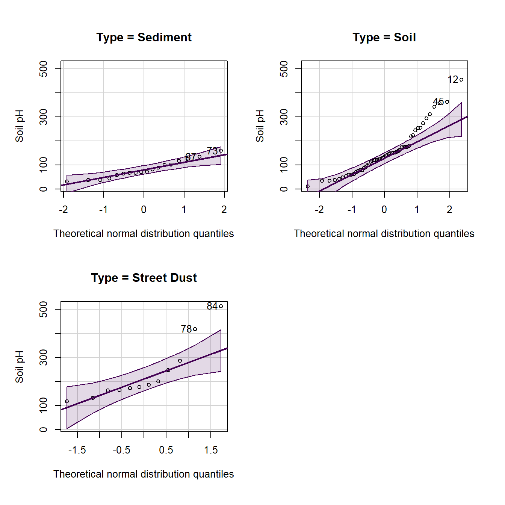
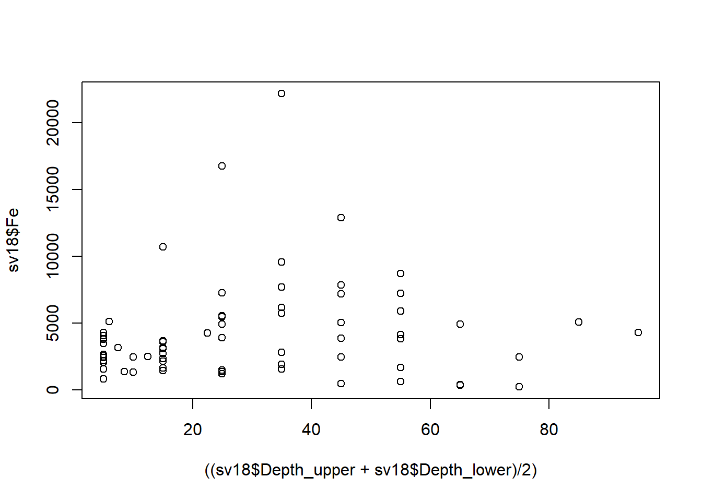
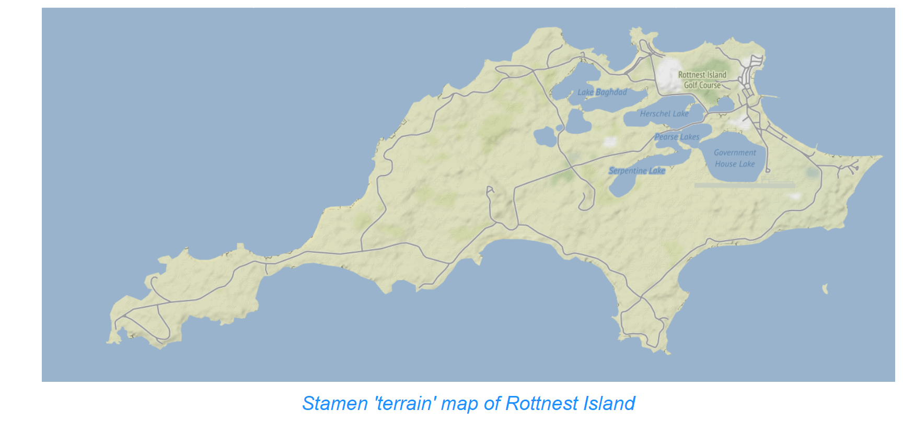

More graphs in R

More basic information on plots in R
This is a supplement to the other preliminary material on R graphics. We have tried to avoid any overlap with other sessions.
In Environmental Science at UWA we try to promote the principles of "graphical excellence". This means:
- Show the data – that is, the data are the important thing we want to communicate in graphics; "looking good" is only useful if it shows the data better!.
- Give your viewer the greatest number of ideas in the shortest time with the least ink in the smallest space (Tufte, 1983)1
- Graphical excellence is
- almost always multivariate...
- ...requires telling the truth about the data (no distortions, fair comparisons, etc.).
Some practical tips:
- Increase the default text and symbol sizes
- Remove unnecessary lines (smooth, spread)
- in RStudio, use the Export▾ button » Copy to clipboard » select ◉Metafile (best pasting into Word, etc.)
- Graph plus caption should be self-contained
- Transform axes if necessary (using arguments in R plotting functions)
- Use appropriate proportions (width/height) for the plot you are creating
1 Tufte, E.R., 1983. The visual display of quantitative information. Graphics Press, Cheshire, Connecticut, USA.
We first load a dataset that we may have seen before (we use it a lot for illustration).
sv2017 <- read.csv(file="sv2017_original.csv", stringsAsFactors = TRUE)
sv2017$Group <- as.factor(sv2017$Group)We then make an xy-plot (Figure 1) using the
scatterplot() function from the car package,
first setting graphics output parameters with par() and
making a custom palette with palette().
require(car)
# adjust overall plot appearance using options within par()
# mar sets plot margins, mgp sets distance of axis details from axis
par(font.lab=2, mar=c(4,4,1,1), mgp=c(2.2,0.7,0.0))
# create custom palette with nice colours :)
palette(c("black","red3","blue3","gold3","sienna"))
# draw scatterplot with customised options
# pch sets plot character (symbol); cex sets symbol/font sizes
scatterplot(Ca~pH | Type, data=sv2017, log="y", smooth=FALSE,
legend = list(coords="topleft"), col=c(5,3,1),
pch=c(16,0,2), cex=1.5, cex.lab=1.5, cex.axis=1.2)Figure 1: Scatterplot of Ca vs. pH from the sv2017 dataset, made using car::scatterplot() after setting graphics parameters and colour palette.
|
Colours in R The greatest 2-digit hexadecimal number is "#A1B2C399", where the last 2 characters define the colour
transparency. "#xxxxxx00" would be fully transparent, and
"#xxxxxxFF" would be fully opaque. We can also use the
colour name "transparent" in R which can
sometimes be useful.
|
R has a set of 26 built-in plotting symbols which
can be specified using the pch = argument in many plotting
functions. For symbols 0-20 the colour is set using the argument
col =. For symbols 21-25 col = sets the border
colour, and the fill colour is set with bg =.
Figure 2: Plot symbols in R accessible via the pch=
argument in many plotting functions. For all symbols
col='navy' and for pch 21-25 bg='gold'.
histogram with density line
We have seen a modified histogram similar to Figure 3 before. Adding a density line to a histogram can help us identify bimodal distributions, or see more easily if the distribution is symmetrical or not.
# load required package(s)
require(RcmdrMisc)
# plot histogram with custom scale and y-axis limits
Hist(log10(sv2017$EC), scale="density", breaks=15,
col="gray", ylim=c(0,2))
# add density plot overlay onto histogram
lines(density(log10(sv2017$EC), na.rm=TRUE), col="blue")Figure 3: Histogram of EC from the sv2017 data with density line plot added.
Boxplot by groups
We also made a grouped box plot like the one in Figure 4 in a previous session.
# set up overall plot parameters with par()
par(mar=c(4,4,1,1), mgp=c(2.2,0.7,0),
font.lab=2, lend="square", ljoin="mitre")
# make an object containing a table of means
Cu_means<-tapply(log10(sv2017$Cu), sv2017$Type, mean, na.rm=T)
# plot the boxplot with nice axis titles etc.
boxplot(log10(sv2017$Cu) ~ sv2017$Type, id.method="y",
col=c("skyblue","tan","grey"), id.n=0,
xlab="Sample Type", cex=1.4, cex.lab=1.4, cex.axis=1.3,
ylab=expression(bold(paste(log[10],"(Cu, mg/kg)"))))
# plot the means as a symbol
points(Cu_means, col="blue", pch=3, cex=1.5, lwd=2)
# optionally add a horizontal line to represent some
# threshold or guideline value(s)
abline(h=log10(65), col="red", lty=2)
# add a legend (especially if a threshold line was added!)
# Note use of \n to add a line break
legend("bottomright",legend=c("Mean","ISQG-Low:\nCu 65 mg/kg"),
pch=c(3,3), pt.cex=c(1.5,0), pt.lwd=c(2,-1), cex=1.,
col=c("blue","red"),lty=c(-1,2),lwd=c(-1,2), bty="n",
seg.len=2.5, inset=0.03, x.intersp = 0.5)Figure 4: Boxplot of Cu by Type, showing means, in the sv2017 data.
# delete the object containing the table of means
# (to keep your R workspace tidy)
rm(Cu_means)scatterplot of water sample points by group
First read the water data:
SL_water <- read.csv(file="SL18.csv", stringsAsFactors = TRUE)
SL_water$Group <- as.factor(SL_water$Group)We can then use scatterplot() from the car
package to plot the points. Important arguments in the
scatterplot() function in this example are:
regLine = FALSEto not plot regression lines for the pointssmooth = FALSEto not plot smoothed curves for the pointsasp = 1sets the plot aspect ratio to 1 so the geometry is not distorted (this is important for anything resembling maps!)legend = list(...)to set legend position, size, etc.pch = c(...)to select specific symbols for each group of points
We also define the colour palette to be used; viridis::
specifies the package to use without actually loading it, so we can use
the function viridis(n), which gives a palette of
n colourblind-friendly colours
(In
general we can run packageName::function() without
explicitly loading packages.)
# define the colour palette to choose plot colours from
palette(c("black", viridis::viridis(8)))
carPalette(palette())
# note the asp=1 option constrains the height/width ratio
scatterplot(Northing ~ Easting | Group,
regLine = FALSE,
smooth = FALSE,
boxplots = FALSE,
cex = 1.25,
cex.axis = 1.2,
cex.lab = 1.3,
data = SL_water,
asp = 1,
lwd = 2,
legend = list(coords="topright", cex=1.25),
pch = c(0,1,2,5,6,15,16,17,18,7,9,10),
xlab = "Easting UTM Zone 50 (m)",
ylab = "Northing UTM Zone 50 (m)",
main = "Smith's Lake Water Sample Locations 2017",
cex.main = 0.7
)
text(
c(391380, 391390),
c(6466498, 6466405),
labels = c("Inlet", "Outlet"),
pos = 2,
col = c(2, 5)
)Figure 5: Plot of water sample locations in Smith's Lake in 2018 made using car::scatterplot().
'base R' plot of water sample points by group
We can reproduce Figure 5 made using car::scatterplot()
in base-R graphics as well:
# set up overall plot parameters with par()
# font.lab=2 makes axis titles bold
# 'lend' sets line end style, 'ljoin' sets line join style
par(
mar=c(4,4,1,1),
mgp=c(2.2,0.7,0),
font.lab=2,
lend="square",
ljoin="mitre"
)
# define the colour palette to be used
# viridis:: specifies the package to use without actually loading it, so
# we can use viridis(n) which gives a palette of n colourblind-friendly colours
palette( c("black", viridis::viridis(8)))
# plot the points, separating by the factor 'Group'
# note the asp=1 option constrains the height/width ratio
plot(SL_water$Northing ~ SL_water$Easting,
cex = 1.3,
cex.axis = 1.2,
cex.lab = 1.3,
asp = 1,
lwd = 1,
pch = c(21:25,21:24)[SL_water$Group], # better plot symbols!
bg = c(1:9)[SL_water$Group], # fill colour for pch 21-25
xlab = "Easting UTM Zone 50 (m)",
ylab = "Northing UTM Zone 50 (m)",
main = "Smith's Lake Water Sample Locations 2017",
cex.main = 0.7
)
# add a grid (optional)
grid()
# draw the legend to identify groups by symbol/colour
# note similar usage of cex, pch, etc.
legend(
"topright",
title="Group",
legend=levels(SL_water$Group),
cex=1.2,
pch = c(21:25,21:24), # vector for pch= same as for plot
pt.bg = 1:9, # fill colour for pch 21-25
pt.cex=1.3,
pt.lwd=1,
box.col="grey",
box.lwd=2,
inset=0.02
)
# add some text at appropriate coordinates
# vector of x's, vector of y's, vector of text labels, etc.
text(
c(391380, 391390),
c(6466498, 6466405),
labels = c("Inlet", "Outlet"),
pos = 2,
col = c(6, 3)
)Figure 6: Plot of water sample locations in Smith's Lake in 2018 made using base-R graphics.
The code to make Figure 6 is somewhat more intricate than that for Figure 5, but base-R plotting can give us more control over plot appearance. (Note that we don't need to have each function argument on a separate line, as we have done in the previous code block.)
"...when we look at the graphs of rising ocean temperatures, rising carbon dioxide in the atmosphere and so on, we know that they are climbing far more steeply than can be accounted for by the natural oscillation of the weather ... What people (must) do is to change their behavior and their attitudes ... If we do care about our grandchildren then we have to do something, and we have to demand that our governments do something."
--- David Attenborough
Manipulating graphics parameters
First read some more data 🙂
sv18 <- read.csv("sv18.csv", stringsAsFactors = TRUE)
sv18$Group <- as.factor(sv18$Group)1. Using xy-plots to look at the effect of changing
par() function arguments
We use the base-R function par() to
change graphics parameters like plot margins. After using
par() these stay changed until changed again by running
par() with different arguments.
For example let's plot an x-y plot using the default
settings in par():
plot(sv18$Ca ~ sv18$pH, log="y")Figure 7: Default plot of Ca vs. pH.
Now, try changing some graphics options using the par()
function and re-running the simple plot
par(mar=c(4,4,1,1), mgp=c(1.8,0.7,0), font.lab=2, cex=1.5, cex.axis=1.25,
cex.lab=1.5, tcl=0.2)
plot(sv18$Ca ~ sv18$pH, log="y")Figure 8: Plot of Ca vs. pH with plot margins, symbol sizes, and font size and style changed using par().
This time we adjust the settings in par() to plot
multiple plots on a page using the mfrow argument, which
needs a two-value vector c(rows,columns).
par(mfrow=c(2,2), mar=c(4,4,1,1), mgp=c(1.2,0.2,0),
font.lab=2, cex=1., cex.axis=.8, cex.lab=1.,
tcl=0.2)
with(sv18, plot(Ca ~ pH, log="y", pch=0))
with(sv18, plot(Mg ~ pH, log="y", pch=1, col = "red3"))
with(sv18, plot(Na ~ pH, log="y", pch=2, col = "purple"))
with(sv18, plot(Sr ~ pH, log="y", pch=3, col = "blue2"))Figure 9: Plot of Ca, Mg, Na, and Sr vs. pH with multiple plots specified using par() and different sub-plot appearances set using arguments in plot().
2. Plots of variable distributions
Cumulative Distribution Function using plot.ecdf(). The
custom y-axis label explains the plot!
(note use of
\u to insert a Unicode character by its 4-digit code
[Unicode character 2264 is 'less than or equal to' (≤)] )
plot.ecdf(sv18$pH, xlab="x = pH",
ylab="Proportion of samples with pH \u2264 x", main="") Figure 10: Cumulative distribution of pH in the sv18 dataset.
A better cumulative plot is the normal quantile or 'q-q' plot
specially transformed axes mean that a normally distributed variable
will plot as a straight line. qqPlot() from the
car package is best; the plot shows the theoretical line
and the 95% confidence range.
require(car)
qqPlot(sv18$pH,
xlab="Theoretical normal distribution quantiles",
ylab="Soil pH")Figure 11: Normal quantile (QQ) plot of soil pH in the sv18 dataset. The values in the output block below are the row numbers for unusual observations, which also appear on the plot.
## [1] 59 58
We can group q-q–plots by a factor:
par(oma=c(1,1,1,1))
with(sv18, qqPlot(Na ~ Type,
xlab="Theoretical normal distribution quantiles",
ylab="Soil pH"))
Here's another customization of histograms - we've seen these in a previous Workshop. Adding a reference concentration shows what proportion of samples have concentrations exceeding this value (or not).
with(sv18, hist(log10(Zn), breaks=seq(0.4,3.2,0.2),
xlab="log10(Zn, mg/kg)", main=""))
# add a vertical line at a threshold value (e.g guideline)
abline(v=log10(300), lty=2, col="red")
text(log10(300),12, labels = "Zn guideline\n300 mg/kg",
pos=4, col="red")Figure 12: Histogram of Zn in the sv18 data, showing a reference concentration added using abline() and text().
Here's a similar customization of box plots - we've
also seen these in a previous Workshop (the only way to get
complex formatting in plot axis labels is to use
expression() – this code has an example for a
subscript in the y-axis label):
boxplot(log10(sv18$Zn) ~ sv18$Type,
xlab="Sample Type",
ylab=expression(bold(paste(log[10],"(Zn, mg/kg)"))), main="")Figure 13: Boxplot of Zn by sample type in the sv18 data, with complex formatting in the y-axis label using an R expression().
Let's plot it again with better font size to copy-paste into a report:
par(mar=c(4,4,1,1), mgp=c(2,0.6,0), font.lab=2)
boxplot(log10(sv18$Zn) ~ sv18$Type,
xlab="Sample Type",
ylab=expression(bold(paste(log[10],"(Zn, mg/kg)"))),
main="",
cex.axis=1.5, cex.lab=1.5,
col="moccasin")
# add a HORIZONTAL line at a threshold value (e.g guideline)
abline(h=log10(300), lty=2, col="red")
# label it using text()
text(1,log10(300), labels="Zn limit 300 mg/kg",
cex=1.25, col="red", pos=3)Figure 14: Modified boxplot of Zn by sample type in the sv18 data, with complex formatting in the y-axis label using an R expression().
3. Variations on scatter plots
In this sequence of plots we show one way to informatively plot a concentration vs. sediment/soil depth, with depth displayed vertically as we would expect in the real world.
par(mfrow = c(1,2))
plot(sv18$Fe ~ sv18$Depth_lower, pch="-")
plot(sv18$Fe ~ sv18$Depth_upper, pch="+")Figure 15: Plots of Fe vs. depth measurements in the sv18 data.
Ideally we would like to plot concentration against mean
depth, but we can't use a formula (i.e. anything in
R that uses ~) in another formula! ...
...so we change the syntax for the variables in plot() to
use comma instead of ~ to allow us to put a calculation in:
plot(((sv18$Depth_upper+sv18$Depth_lower)/2), sv18$Fe)
We could also do this by calculating a new variable, e.g.:
sv18$Depth.mean <- (sv18$Depth_upper+sv18$Depth_lower)/2We would then use the newly-calculated sv18$Depth.mean
as the variable.
For this type of plot, we would prefer to plot depth on the [more intuitive] vertical axis
plot(sv18$Fe, ((sv18$Depth_upper+sv18$Depth_lower)/2), ylim=c(0,100))Figure 16: Plot of Fe vs. depth with x- and y-axis positions switched (so really it's depth vs. Fe, but we have our reasons).
This puts depth in the wrong direction, though, so we use
ylim = to reverse direction of y axis - swap
(0,100) for (100,0).
plot(sv18$Fe, ((sv18$Depth_upper+sv18$Depth_lower)/2), ylim=c(100,0))Figure 17: Plot of Fe vs. depth with x- and y-axis positions switched and the vertical axis (depth) scale reversed.
Now tidy up plot margins, axis labels, etc. - use
help() to understand the function arguments for
par() and plot()...
par(mar=c(4,4,1,1),
mgp=c(1.6,0.5,0),
font.lab=2)
#... and plot it again with nice axis labels
plot(sv18$Fe, ((sv18$Depth_upper+sv18$Depth_lower)/2), ylim=c(100,0),
xlab="Fe (mg/kg)", ylab="Mean depth (cm)")Figure 18: Plot of Fe vs. depth with x- and y-axis positions switched, y axis scale reversed, and tidy axis labels.
What if we want the horizontal axis 'on top'? We do this by omitting
axis plotting (i.e. xaxt="n") and axis label
(xlab="")...
... then plot the x-axis
manually, first adjusting plot margins so that there is more space at
the top of the plot and less at the bottom.
par(mar=c(1,4,4,1)) # won't change anything except margins
plot(sv18$Fe, ((sv18$Depth_upper+sv18$Depth_lower)/2),
xlab="", xaxt="n",
ylim=c(100,0),
ylab="Mean depth (cm)")
# two code lines for manual axis plus label
axis(3)
mtext(side=3, line=2.5, font=2, text="Fe (mg/kg)")Figure 19: Plot of Fe vs. depth with x- and y-axis positions switched, y axis scale reversed, tidy axis labels, and x-axis label and ticks at the top.
|
Axis values in R In R the plot axes have a specific order. For example in the par()
function when setting margins, e.g.
mar=c(4,4,1,1), the margins are set with a four-value
vector. The values of this vector are always in the same order:
c(bottom, left, top, right), that is, clockwise starting
from the bottom axis = 1.
|
Figure 20: Numbering system for plot axes in R.
4. Scatterplot matrices
A scatterplot matrix can be a very useful data exploration tool (for the most effective visualization, you might need to change the default colours).
Scatterplot matrices are available using the
scatterplotMatrix() function (which can be shortened to
spm()) from the car package.
The most basic implementation is plotting without grouping by a
Factor variable. Note the different way in which the variables (a list
starting with ~ and separated by +) and data
frame (data=) are specified. The smoothed trend through the
points can be included by changing the smooth= argument to
smooth=TRUE.
A very useful feature of scatter plot matrices is the display of each variable's distribution along the diagonal of the plot matrix. In the example in Figure 21, we can see that all variables have a positively skewed distribution (which might be made more symmetrical by log-transformation).
require(car)
scatterplotMatrix(~Al + Ca + Fe + Na, data=sv18, smooth=FALSE)Figure 21: Scatter plot matrix of Al, Ca, Fe, and Na concentrations in sediment + soil + street dust samples from Smith's Lake and Charles Veryard Reserves, North Perth, WA, sampled in 2018.
To distinguish the points according to the categories in a Factor
variable, the Factor is included after the list of plotted variables
using the | operator. We also see the distributions
separated by group along the diagonal.
Separating the plots by a factor allows us to see if trends are consistent between groups, or if groups behave very differently.
scatterplotMatrix(~Al + Ca + Fe + Na | Type, data=sv18, smooth=FALSE,
col=c("sienna", "blue3", "grey50"),
pch = c(15,1,3), cex=1.4)Figure 22: Scatter plot matrix of Al, Ca, Fe, and Na concentrations in samples from Smith's Lake and Charles Veryard Reserves, North Perth, WA, sampled in 2018 and grouped by sample type (sediment, soil, or street dust).
Often we can get a better idea of the trends and differences between variables by transforming variables (log10-transformation usually is OK).
scatterplotMatrix(~log10(Al) + log10(Ca) + log10(Fe) + log10(Na) | Type,
data=sv18,
smooth=FALSE,
col=c("sienna", "blue3", "grey50"),
pch = c(15,1,3), cex=1.4)Figure 23: Scatter plot matrix of log-transformed Al, Ca, Fe, and Na concentrations in samples from Smith's Lake and Charles Veryard Reserves, North Perth, WA, sampled in 2018 and grouped by sample type (sediment, soil, or street dust).
5. Simple maps
Maps are [mostly] just scatterplots with a map background – we will spend a separate session on maps in R later.

CC-BY-SA • All content by Ratey-AtUWA. My employer does not necessarily know about or endorse the content of this website.
Created with rmarkdown in RStudio using the darkly theme from Bootswatch via the bslib package, and fontawesome v5 icons.